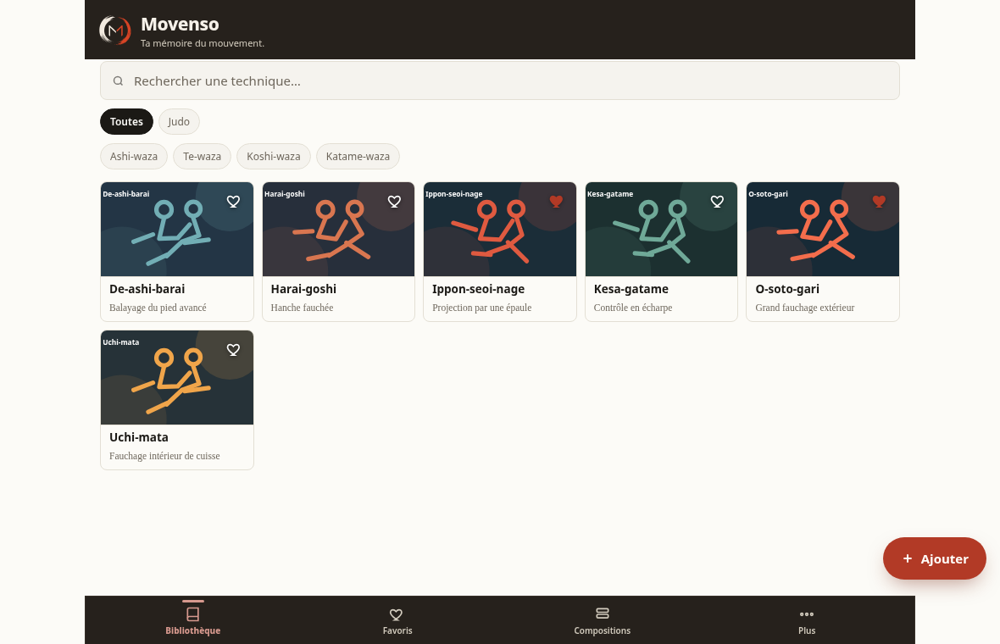

Toujours le même navigateur
Chrome, Edge ou un autre navigateur possèdent chacun leur propre espace de stockage.
PC · Mac · Linux
La version navigateur reprend l’interface et les formats de Movenso. Tes packs restent les mêmes, tes données restent liées au navigateur utilisé.

Version navigateur
La page de l’application est servie en ligne. La bibliothèque, elle, est conservée localement dans le profil du navigateur.
Chrome, Edge ou un autre navigateur possèdent chacun leur propre espace de stockage.
Avant de nettoyer les données du navigateur ou de changer d’ordinateur, exporte une sauvegarde complète.
Les fichiers .movpack circulent entre Android et la version navigateur.
À retenir : « données locales » ne signifie pas encore « site entièrement installable hors connexion ». La version web actuelle doit être chargée depuis cette adresse.
Version portable
Une future version portable pourrait embarquer l’interface et un petit lanceur local, afin d’ouvrir Movenso sans installation complexe et sans dépendre du site.
Cette version n’est pas incluse dans la proposition actuelle : elle doit être construite et recettée comme un livrable séparé.
Aujourd’hui
Ouvre-la, importe un pack ou crée une technique, puis exporte régulièrement ta bibliothèque.